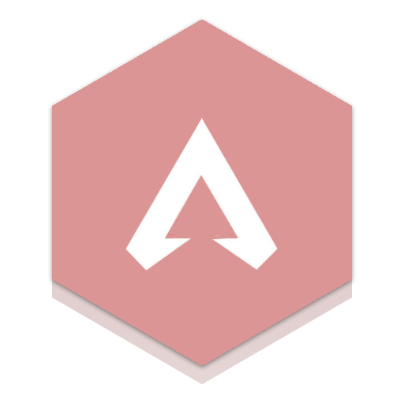

| Kontakt: |
|---|
| Richard Lüdtke |
| Lüneburger Straße 26a |
| 39106 Magdeburg |
| richard.luedtke@gmx.de |
2006


2007

Pokemon-Diamond-Icon: https://www.pokewiki.de/images/thumb/5/52/Pok%C3%A9mon_Diamant_Deutsch.jpg/315px-Pok%C3%A9mon_Diamant_Deutsch.jpg
Pokemon-Diamond-Screen: https://www.wikihow.com/images/thumb/6/67/Find-Drifloon-on-Pokemon-Diamond-and-Pokemon-Pearl-Step-1-Version-2.jpg/aid379979-v4-728px-Find-Drifloon-on-Pokemon-Diamond-and-Pokemon-Pearl-Step-1-Version-2.jpg
Pokemon-Diamond-Screen: https://www.wikihow.com/images/thumb/6/67/Find-Drifloon-on-Pokemon-Diamond-and-Pokemon-Pearl-Step-1-Version-2.jpg/aid379979-v4-728px-Find-Drifloon-on-Pokemon-Diamond-and-Pokemon-Pearl-Step-1-Version-2.jpg
2008
2009

2010


2011


2012

2013
2014
2015
Ori and the blind forest
Ein weiterer wunderschöner Indie-Titel mit einem bezauberndem Artwork und Soundtrack.

2016

2017
Playerunknown's Battleground
PUBG war auch für mich das erste Battle Royal Videospiel dass ich gespielt habe.

2018
2019

2020